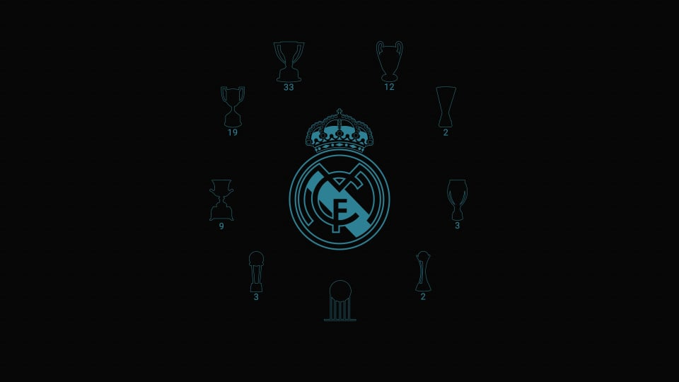

Le Real Madrid est un club de football espagnol basé à Madrid. Formé en 1902 sous le nom de Madrid Football Club, il a joué son premier match le 13 mai 1902 en Copa de la Coronación. Le club joue dans le Championnat d'Espagne de football et il en a été
l'un des membres fondateurs en 1929. Il est l'un des trois seuls clubs avec Athletic Bilbao et le Barcelone à ne jamais avoir été relégué en 2e division
Le Real Madrid est club le plus titré en Liga (34) et en Ligue des champions (13). Il est aussi le plus couronné sur la scène internationale avec 26 titres. Le joueur le plus capé de l'histoire du club est Raúl avec 741 matches joués de 1994 à 2010, le meilleur buteur de l'histoire du Real Madrid est Cristiano Ronaldo avec 450 buts marqués toutes compétitions confondues de 2009 à 2018
Top cinq joueurs les plus titrés du Real Madrid en compétitions officielles :
- Paco Gento avec 24 titres
- Marcelo avec 23 titres
- Sergio Ramos avec 22 titres
- Manuel Sanchís avec 21 titres
- Karim Benzema avec 20 titres
 REAL MADRID TITRES